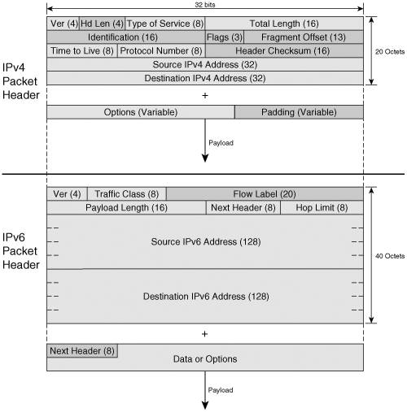
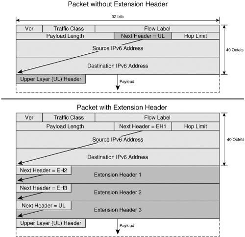
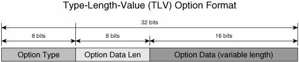

IPv6 Packet FormatThe structure of the IP packet header was modified in IPv6. These changes reflect some of the lessons learned from years of operating IPv4, and they have a significant impact on the protocol operation. For these reasons, the IPv6 packet format is briefly reviewed in the next section. IPv6 Versus IPv4 Basic Header FormatTo understand what motivated the choices made with respect to the IPv6 packet header structure, it is important to review the structure of its predecessor. A packet has two components: the header that contains the layer 3 information, and the payload that carries the data and the upper-layer protocol information. RFC 791 defines the following fields for the IPv4 packet header:
Figure 2-15 shows the IPv4 packet header structure. Figure 2-15. IPv4 and IPv6 Packet Header StructureThe relevancy of the highlighted fields has been re-evaluated in the process of developing IPv6. The structure of the new header observes several new rules:
Based on these rules, RFC 2460 defines the following IPv6 header fields:
Figure 2-15 shows the IPv6 header next to the IPv4 header to underline their differences and similarities. The Flow Label is highlighted because it represents a new functionality introduced by IPv6. IPv6 Extension HeadersThe basic IPv6 header is sufficient to perform the functions of simple packet forwarding and ToS-or Flow Labelbased QoS. There is, however, more to end-to-end IP communication than what is covered by the basic header capabilities. With the basic header at a fixed size, IPv6 had to find another way to implement the functionality offered by the Options field in IPv4. It does that through the concept of extension headers. Note In fact, IPv6 offers, through extension headers, more space for option-like information. The IPv4 options are limited to 40 bytes, whereas the IPv6 extension headers are limited only by the packet size. Predefined placeholders for additional information that relates to the packet payload or the packet handling, the extension headers provide the means to complement in a modular way the functionality of the basic packet header. The format of each extension header type supports certain functions. All extension headers, however, are aligned on 8-byte boundaries to maintain 8-octet alignment. Extension headers are chained together as needed. The Next Header field of each header starting with the basic one is a pointer to the type of the following header in the chain. The Next Header field of the last extension header in the chain contains the code for the upper-layer protocol in the payload. Figure 2-16 shows an IPv6 packet without extension headers and one with extension headers. There is a specific code for each extension header type as well as for the upper-layer (UL) protocols. Figure 2-16. Chaining Extension Headers to the Basic IPv6 Packet HeaderRFC 2460 defines the IPv6 extension headers. You can find detailed descriptions of the extension headers, their format, and functionality in most introductory IPv6 books. This section provides just a brief review of this topic. Hop-by-Hop Options HeaderThe Hop-by-Hop header (identified by a Next Header field value of 0) is the only extension header that has to be processed by all the nodes on the path of the packet other than the destination. For this reason, this extension header, when present, always follows the basic IPv6 header. It is used, for example, to facilitate forwarding of Jumbograms, as described later in this section, or to provide routers with forwarding instructions. The Hop-by-Hop header may carry multiple options containing other parameters that should be used in processing the packet. The options are encoded in Type-Length-Value (TLV) format, as shown in Figure 2-17. Figure 2-17. TLV-Encoded Options FormatEvery node that receives an IPv6 packet with a Hop-by-Hop extension header will process the options. If an option is not understood, an Internet Control Message Protocol (ICMP) error message might be sent to the source. Note There is no restriction on how many times an option type shows up in a Hop-by-Hop header. Not all option types generate ICMP error messages. These characteristics of the options can potentially be used in low-bandwidth denial-of-service attacks. It is important to consider the performance impact of the hop-by-hop processing on the routers. One use of the Hop-by-Hop extension header is to support the use of large packets. The 16-bit-long Payload Length field in the basic header can represent payload lengths no larger than 65,536 (216) octets. The Hop-by-Hop extension header contains a 32-bit-long field that can represent larger packets called Jumbograms. The Payload Length field is set to 0 when the hop-by-hop options are used to identify a Jumbogram. RFC 2711 defines the Router Alert option of the Hop-by-Hop extension header that is used to provide intermediate routers with forwarding instructions. This feature could be used, for example, for resource reservation with RSVP. It is also used in Multicast Listener Discovery packets to alert routers that they have to process these packets (see Chapter 6). Destination Options HeaderAs the name indicates, the information carried in the Destination Options extension header is intended for the packet's destination only. The Destination Options header is used, for example, with MIPv6. Besides the Hop-by-Hop header, the Destination Header is the only one that also carries options in the same format presented in Figure 2-17. The Destination Options header is identified by a Next Header field value of 60. Routing HeaderThe Routing extension header (identified by a Next Header field value of 43) is used to enforce a certain path for the packet. This path is defined by the source, and is most likely different from the one computed by the routing protocols operating in the network. The functionality implemented through the Routing extension header is similar to IPv4's Loose Source and Record Route option. The Routing header contains a Type field that defines the precise functionality of the extension header. At the time of this writing, two types have been defined:
This is a developing topic, and other types are being proposed (but those have not yet reached RFC status). Fragment HeaderFragmentation is processing intensive, and it could be taxing on the resources of network elements. To protect the network infrastructure resources, it was decided that routers in the path of an IPv6 packet should not perform fragmentation. Before sending the packet, the source must go through the PMTU Discovery process, as described later in the chapter in the section "Internet Control Message Protocol for IPv6." It determines the largest packet that it can use without fragmentation along the way. Although the routers are saved the fragmentation trouble, the destination still needs to know how to reassemble the received fragments. It will receive these instructions from the source via the Fragment Options header. The first packet exchanged, however, must contain all the information used in forwarding it between the two endpoints: IPv6 basic header and any extension headers that need to be processed along the way. This is called the unfragmentable part of the original packet. Note Two new rules in IPv6 relate to MTU handling: The MTU of a link should not be smaller than 1280 bytes, and routers do not do packet fragmentation. In today's networks, these two requirements are not as stringent as they might seem. Links with small MTUs are becoming less common, so the MTU of a typical Ethernet host is likely to be close to the PMTU it will use for most of its communication. Authentication HeaderThis header is similar to the IPv4 IPsec Authentication Header defined in RFC 2402. It provides packet source authentication and data integrity protection. The AH header is identified by a Next Header field value of 51. Encapsulating Security Payload HeaderThis header is similar to the IPv4 IPsec Encapsulating Security Payload (ESP) header defined in RFC 2406. It is identified by a Next Header field value of 50. The ESP and AH extension headers are used the same way as in IPv4. Mobility HeaderRFC 3775 describes this extension header and its use in the communication between the mobile nodes, correspondent nodes, and home agents in establishing and managing bindings (for more details, see Chapter 8). It is identified by a Next Header field value of 135. Linking Multiple Extension HeadersThe various extension headers are chained based on the information that needs to be provided to the destination or intermediary hops along with the payload data. The following set of extension headers Hop-by-Hop, Destination, Routing, Fragmentationcan follow, for example, a basic IPv6 header. The sequence in which these extension headers are added to the basic header is not random. There is a recommended order in which extension headers should be chained in an IPv6 packet, but the only strict requirement is for the Hop-by-Hop (if present) to be ahead of any other extension header type. Table 2-7 lists the extension header in the recommended chaining order along with the Next Header codes that identify them and the codes for three common layer 4 protocols.
Extension headers are an important aspect of IPv6, and their capabilities will be leveraged more and more in optimizing the operation of production deployments. They make IPv6 easily extensible compared to its predecessor, and that could prove to be one of its most significant benefits besides the larger address space. The modular concept of the extension headers represents a scalable and improved alternative to the variable-length Options field in the IPv4 header. At the same time, note that extension headers can pose security risks (see Chapter 9, "Securing IPv6 Networks"). The presence of extension headers could also impact packet-forwarding performance the same way options had in the case of IPv4. Routers have to process upper-layer information that now is moved deeper into the packet and would require the processing of the entire extension header chain. IPv6 and Data-Link TechnologiesIn conjunction with the analysis of a layer 3 protocol, it is important to analyze its mapping at layer 2 of the OSI model. IPv6 operates over various data-link technologies, as specified in the following RFCs:
These RFCs (except for DPT/SRP which uses mechanisms similar to Ethernet) also define mechanisms for building the IPv6 Interface ID for each of these media transport types. The layer 2 PDU format is independent of the transported upper-layer protocol. However, the Protocol ID field of the layer 2 header indicates the type of layer 3 protocol it carries in the payload. For example, Table 2-8 shows the value of this field for several commonly used data-link technologies.
The frame format, in particular the Protocol ID, is important when layer 2 filtering is used to differentiate between IPv4 and IPv6 traffic. A good understanding of the IPv6 packet structure and the structure of the corresponding layer 2 framing is important not only for a better understanding of the protocol operation but also in developing IPv6 troubleshooting expertise. The rest of the chapter presents several important IPv6-specific control-plane mechanisms. To facilitate their clear description, the subsequent sections are prefaced at this point with a list of relevant terms used henceforth:
|